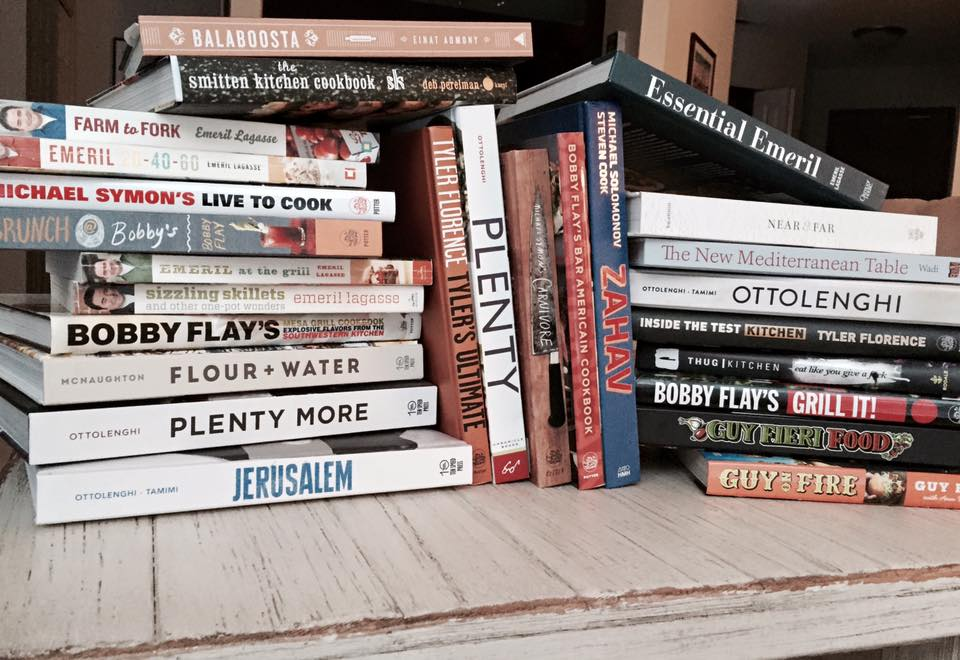
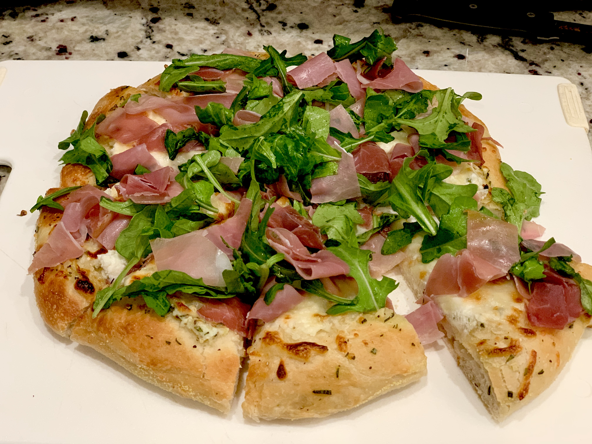

RESEARCH & DATA

73 week documentation of meal planning
Word documents of 30 cookbooks treated as recipe checklists
Over 500 personal food photos
Existing project user testing of a food delivery application
Existing similar prototype projects
HOW I GATHERED IT
The research and data that I had collected is based off of my culinary journey. When I first picked up cooking I started with Food Network's online and magazine recipes. I quickly made my way through those since I tried new recipes almost every day. I found myself running out of options. That is when I started collecting cookbooks and my meal planning really kicked off. I documented every week Monday through Sunday which resulted in the 73 weeks of meal planning. I also created word documents of my books so I could easily plan away from home without them. I have over 500 photographs of food, inlcuding both things I have made and inspiring dishes are restaurants. The photos above are meals I have made myself. I am proud to say that during those weeks I made nearly 300 new recipes.
This project is also largely inspired by existing projects that I had created during the MAGWD program. One of them in particular was a food delivery prototype, similar to Door Dash, that I had made during my UX Design class. I have many takeaways from the process of completing that project, very notable ones are the lessons from user testing and the evolution of my prototype as a result. That is why it was a strong influence in my decision to create another prototype.
INFOGRAPHIC DATA TALLY

The main goal of my project is to share with others what I had learned from my journey during those weeks by creating a helpful prototype as well as compiling my data. With that, I set out to make an infographic. This one is based off of different cuisines that I had repeated during the weeks I had recorded.
Each "x" represents one meal that I had made. They information is divided between "MAINS" and "SIDES".